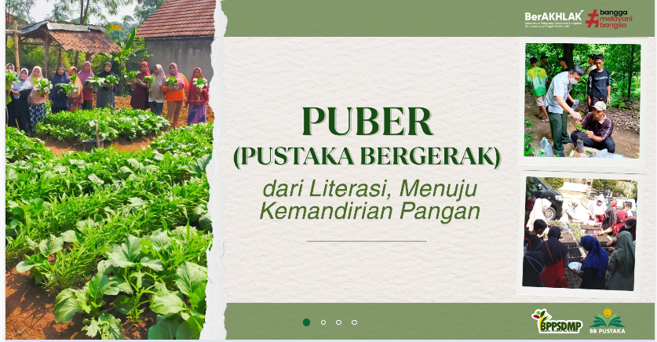
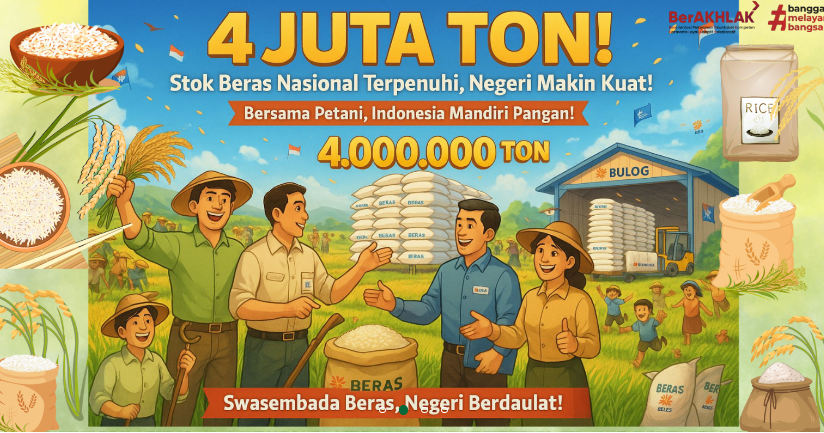
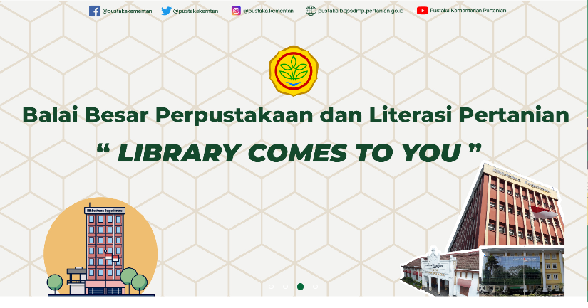
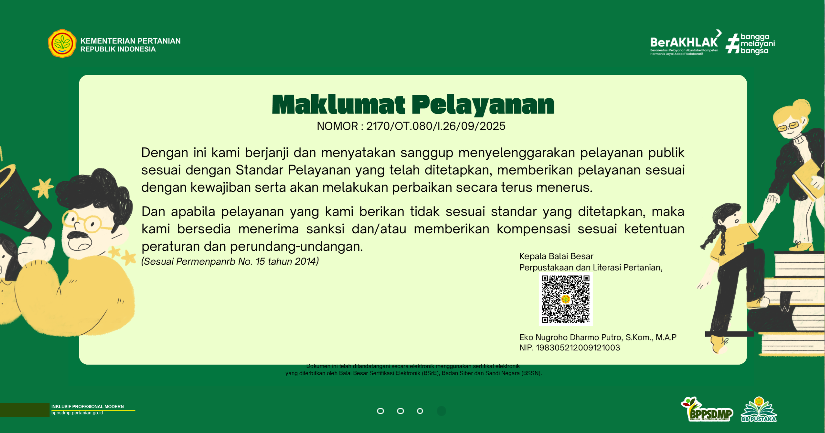
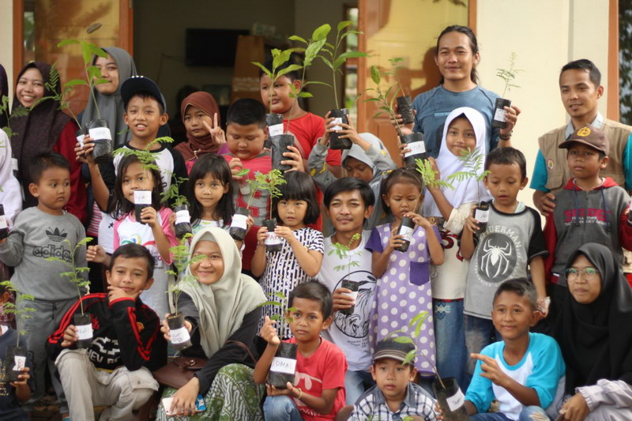
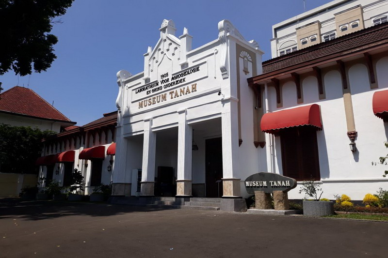
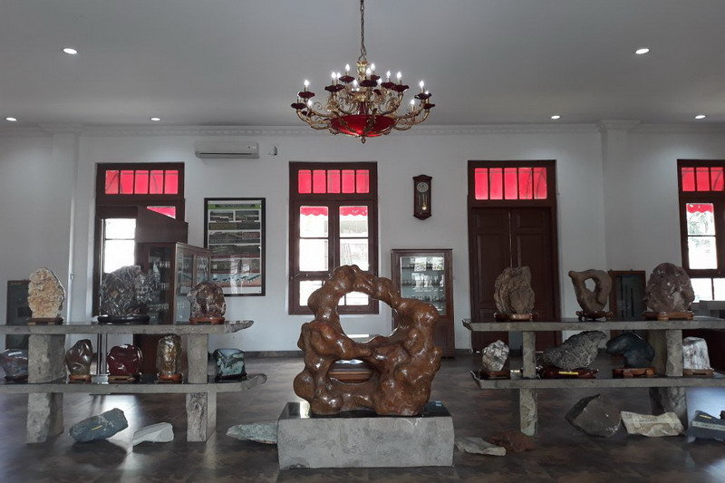
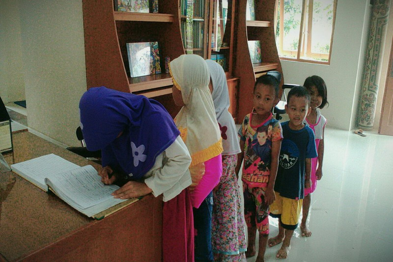
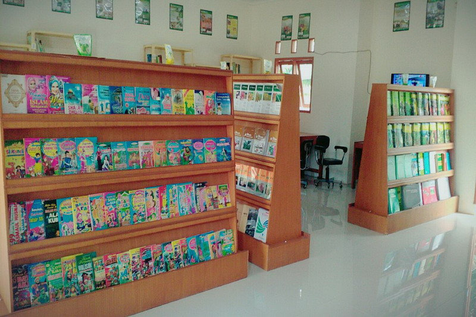
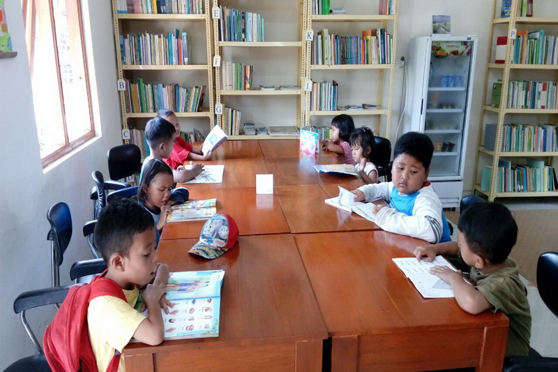

Home
Profil ▼
Sejarah
Visi dan Misi
Struktur Organisasi
Tugas Pokok dan Fungsi
Koleksi dan Layanan
Layanan ▼
Koleksi Umum
Publikasi ▼
JPP
Buku
Jurnal
Brosur
Warta
PUSTAKA Library Comes To You Balai Besar Perpustakaan dan Literasi Pertanian
Selamat Datang di Website Perpustakaan Pertanian




GALLERY
     